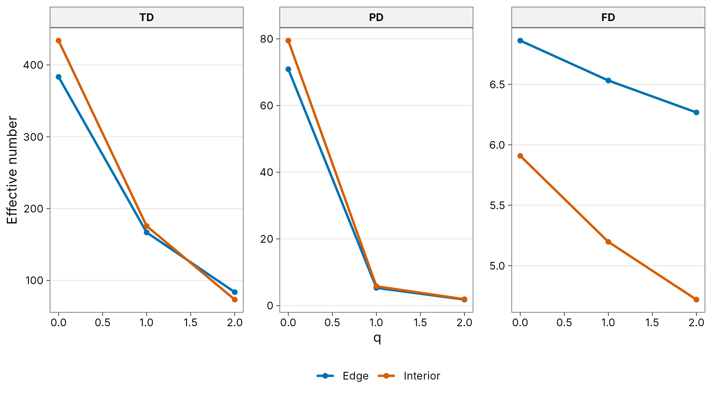

6. Functional and phylogenetic diversity
Source:vignettes/articles/guide-06-dimensions.Rmd
guide-06-dimensions.RmdThe concept
Species counts treat every species as equally different. But a forest of ten closely related oaks differs from one with ten trees from ten families, and a community of ten species with identical traits performs one ecological role. Two further dimensions capture this:
| Dimension | Weighs species by | Question it answers |
|---|---|---|
| Taxonomic diversity (TD) | Nothing: all species equally distinct | How many species? |
| Phylogenetic diversity (PD) | Branch lengths of a phylogeny (Chao, Chiu and Jost 2010) | How much evolutionary history? |
| Functional diversity (FD) | Distances between species’ traits (Chao et al. 2019) | How many distinct ecological roles? |
tidydiversity measures all three as Hill numbers, so they are in the same unit, the effective number of species, lineages or functional groups, and can be compared directly:
-
PD (with
pd_unit = "mean") is the effective number of equally distinct lineages spanning the tree’s depth. -
FD treats species closer than a threshold
in trait space as functionally identical, and counts the effective
number of distinct functional groups. By default
is the mean distance between two individuals;
tau = "auc"integrates over all thresholds so none has to be chosen.
When FD or PD is much lower than TD, many species are redundant: they duplicate traits or lineages already present.
Data
Trees at the edge and in the interior of a Brazilian Atlantic rainforest fragment, with a dated phylogeny and a trait distance matrix, shipped with the iNEXT.3D package (Chao et al. 2021).
library(tidydiversity)
library(dplyr)
library(ggplot2)
data(list = c(
"Brazil_rainforest_abun_data", "Brazil_rainforest_phylo_tree",
"Brazil_rainforest_distance_matrix"
), package = "iNEXT.3D")
wide <- Brazil_rainforest_abun_data
brazil <- tibble(
site = rep(colnames(wide), each = nrow(wide)),
species = rep(rownames(wide), ncol(wide)),
n = unlist(wide, use.names = FALSE)
) |> filter(n > 0)
tree <- Brazil_rainforest_phylo_tree
traits <- as.matrix(Brazil_rainforest_distance_matrix)
count(brazil, site, wt = n, name = "trees")
#> # A tibble: 2 × 2
#> site trees
#> <chr> <int>
#> 1 Edge 1794
#> 2 Interior 2074Three dimensions at equal coverage
As in Chapter 3, compare sites at equal sample coverage.
std <- div_standardise(brazil,
abundance = n, type = "all", tree = tree,
distance = traits, coverage = 0.97, nboot = 0
)
tab <- std |>
select(type, site, q, diversity) |>
tidyr::pivot_wider(names_from = site, values_from = diversity)
knitr::kable(tab, digits = 1,
caption = "Taxonomic (TD), phylogenetic (PD) and functional (FD) diversity at 97 % coverage."
)| type | q | Edge | Interior |
|---|---|---|---|
| TD | 0 | 383.3 | 433.8 |
| TD | 1 | 166.8 | 175.7 |
| TD | 2 | 83.7 | 73.3 |
| PD | 0 | 70.9 | 79.5 |
| PD | 1 | 5.3 | 5.8 |
| PD | 2 | 1.8 | 1.9 |
| FD | 0 | 6.9 | 5.9 |
| FD | 1 | 6.5 | 5.2 |
| FD | 2 | 6.3 | 4.7 |
ggplot(std, aes(q, diversity, colour = site)) +
geom_line(linewidth = 0.9) +
geom_point() +
facet_wrap(~type, scales = "free_y") +
scale_colour_tidydiversity() +
labs(y = "Effective number", colour = NULL) +
theme_tidydiversity()
How to read it.
- Compare the two sites within each panel: which is more diverse in species, lineages and functions.
- Compare the size of numbers across panels: TD is in species, PD in lineages and FD in functional groups. FD values far below TD mean many species are functionally redundant.
- Compare the shape of each profile: a steep fall from to means a few species, lineages or functions dominate.
Interpretation. The three dimensions tell different stories:
- Species (TD): the interior has more species than the edge at (433.8 against 383.3), but the edge has more dominant species at (83.7 against 73.3): the interior is richer but more dominated by a few abundant species.
- Lineages (PD): the interior holds slightly more evolutionary history (79.5 against 70.9 effective lineages at ).
- Functions (FD): the edge is functionally more diverse at every order (6.9 against 5.9 functional groups at ), even though it has fewer species. A plausible explanation, to be tested rather than assumed, is that edge conditions (more light, drier air, disturbance) admit species with a wider range of traits, while the interior’s extra species are largely functionally redundant.
All FD and PD values are far below the species numbers: many species share lineages and traits. So the interior’s higher species count does not mean more ecological roles, which is why reporting TD alone can mislead conservation priorities.
Choosing the threshold for FD
tau |
Effect |
|---|---|
| Small | Only near-identical species merge; FD approaches TD |
| Default (mean distance) | Species closer than average are treated as functionally equivalent |
| Large | Most species merge; FD approaches 1 |
"auc" |
Integrates over every threshold from 0 to 1: no choice needed; recommended for comparisons |
Further methods
The traits article covers community-weighted means, classic FD indices (FRic, FEve, FDiv, FDis, Rao’s Q), null models, fourth-corner analysis, intraspecific variation and trait probability densities. The dimensions article shows incidence data and rarefaction curves for all three dimensions.
How to report it
Taxonomic, phylogenetic and functional diversity were quantified as Hill numbers (q = 0, 1, 2) at 97 % sample coverage (Chao et al. 2021) with tidydiversity, whose estimators reproduce iNEXT.3D. Phylogenetic diversity used the dated phylogeny (effective number of lineages); functional diversity used Gower trait distances with the default threshold (mean pairwise distance; Chao et al. 2019).
References
Chao, A., Chiu, C.-H. and Jost, L. (2010). Phylogenetic diversity measures based on Hill numbers. Philosophical Transactions of the Royal Society B, 365, 3599-3609.
Chao, A. et al. (2019). An attribute-diversity approach to functional diversity, functional beta diversity, and related (dis)similarity measures. Ecological Monographs, 89, e01343.
Chao, A., Henderson, P. A., Chiu, C.-H., Moyes, F., Hu, K.-H., Dornelas, M. and Magurran, A. E. (2021). Measuring temporal change in alpha diversity: a framework integrating taxonomic, phylogenetic and functional diversity and the iNEXT.3D standardization. Methods in Ecology and Evolution, 12, 1926-1940.